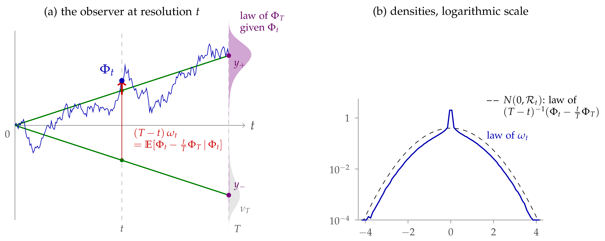
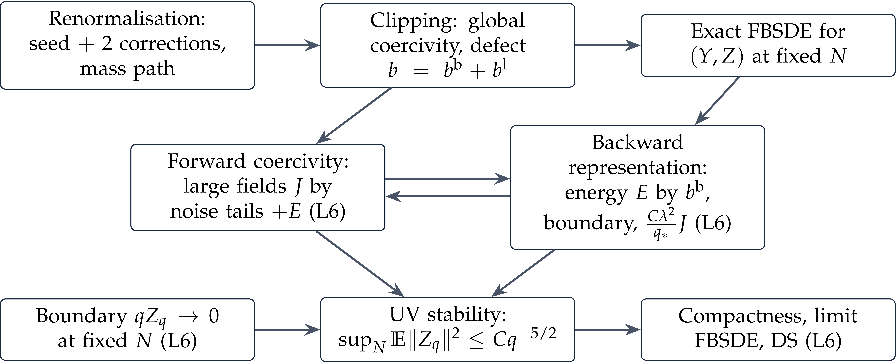

A Constructive Introduction to Quantum Field Theory
Observables and field equations
Massimiliano Gubinelli | University of Oxford
Joint work with Sarah-Jean Meyer, with the use of AI
SISSA lectures, Lecture 5 — notes: Lecture 5,
§9, Appendices A–B
Lecture 4. The interacting field at resolution \(t\) solves the FBSDE
\(\Phi_t \sim \nu_t \propto \mathrm{e}^{- V_t} \mu^{Q_t}\). Filtering: \(\Phi_t = J_t \Phi_T + \zeta_t\), \(J_t = KQ_t\), \(K = Q_T^{- 1}\); forecast \(\psi_t =\mathbb{E}_t \Phi_T = \Phi_t + S_t F_t\); regulator \(\mathcal{R}_t = S_t^{- 1} - K\), \(S_t = Q_T - Q_t\); effective average action \(\Gamma_t\); \(\mu^{\phi}_t\) the law of \(\Phi_T\) given \(\Phi_t = \phi\), and \(\text{Cov}_t\) its covariance.
Today.
From Minkowski to Euclidean: the field equation and Nelson's Euclidean noise.
The field equation at every resolution; DS equations, also pathwise.
The noise is sub-Gaussian, whatever the interaction.
Infinite volume; appendices: algebra of the flow, counterterms, localisation.
Observables and field equations
Lecture 5
For \(G\) a functional of the terminal field, \(\mathbb{E}^{\mathbb{P}}_t [G (\Phi_T)] = G_t (\Phi_t)\), \(G_t (\phi) = \mu_t^{\phi} (G)\), and
the backward Kolmogorov equation, a Doob transform of the Gaussian heat equation. Any solution gives an observable, closed at finite \(T\), not necessarily as \(T \to \infty\). The force \(F_t\) is the observable of \(G = - \mathrm{D} V_T\).
Tangent observables. \(V_T^{\theta}\) depending on a coupling, \(U_t = \partial_{\theta} V_t^{\theta}\):
E.g. the running \(: \varphi^4\): for \(\theta = \lambda\): observables conjugate to the coordinates of theory space.
Minkowski (Lecture 1): \((\Box + m^2) \varphi + V' (\varphi) = 0\) as an operator equation, with the CCR. On time-ordered functions \(\partial_t^2\) also hits the step functions:
Contact terms: the canonical commutator, a derivative, \(\mathrm{i} [\partial_t \varphi (\textbf{x}), \cdot] = \delta / \delta \varphi (\textbf{x})\). Rotate, \(t = - \mathrm{i} \tau\): \(\Box + m^2 \to A\), \(- \mathrm{i} \delta (t) \to \delta (\tau)\), and we get the DS equation of Lecture 2:
nonzero: the Euclidean field does not solve \(A \varphi + V' (\varphi) = 0\).
The noise is the transpose of the derivative: \(\mathrm{D}_h^{\top} = - \mathrm{D}_h + \langle h, \omega \rangle\), so \(\langle h, \omega \rangle = \mathrm{D}_h^{\top} 1\), minus the score of \(\nu\). Not an independent input: a functional of the field, fixed by its law. Free field: \(\omega = A^{1 / 2} \xi\), one derivative of white noise.
Nelson (1975): condition in real space. On the lattice \(\varepsilon \mathbb{Z}^d\), \(\omega := A \varphi + V' (\varphi)\). By the Markov property \(\varepsilon^d \omega (x)\) is minus the score of the law of \(\varphi (x)\) given its neighbours:
not Gaussian. A random variable iff \(\mathbb{E}V'' (\varphi) < \infty\) in the limit (heuristically): unlikely in \(d = 3\) (cf. Albeverio–Liang–Zegarlinski 2006). \(\omega\): Nelson's Euclidean noise (we keep his letter); as far as we know, not studied since as a noise.
Albeverio–Yoshida (2002): prescribe a Gaussian noise. Solve \(A \psi + V' (\psi) = A^{1 / 2} \xi\): \(\psi + A^{- 1} V' (\psi)\) is a free field, and formally
nonlocal, not Markov, no reflection positivity (only on functionals of \(\psi + A^{- 1} V' (\psi)\), a free field).
Here: condition on the scales. The noise at resolution \(t\) is the conditional expectation of \(\omega\) given the coarse field: not Gaussian, but a genuine random variable at each resolution, with Gaussian tails.
All operators are functions of \(A\) (so they commute); \(K = Q_T^{- 1}\), \(J_t = KQ_t\) (heat profile: \(J_t = \mathrm{e}^{- A (t^{- 2} - T^{- 2})} \to \mathrm{e}^{- A / t^2}\) as \(T \to \infty\)).
The noise observable is the filtered bridge noise: with \(\Phi_t = J_t \Phi_T + \zeta_t\), \(\omega_t = K \Phi_t - J_t F_t = S_t^{- 1} \mathbb{E}_t \zeta_t\).
Theorem.
At \(t = T\): the DS equation \(\mathbb{E}^{\nu_T} [\mathrm{D}_h G] =\mathbb{E}^{\nu_T} [G \langle h, K \varphi + \mathrm{D} V_T \rangle]\).
Proof. \(\dot{J}_t = K \dot{Q}_t\): drifts cancel. IBP for \(\mu^{Q_t}\) in direction \(J_t h\), using \(\Phi_t \sim \nu_t\).
At \(t = T\): \(\omega_T = K \Phi_T + \mathrm{D} V_T (\Phi_T)\), the Euclidean noise, and \(\omega_t =\mathbb{E}_t [\omega_T]\): what an observer at resolution \(t\) knows of it.
\(G\) a terminal functional, \(G_t (\Phi_t) =\mathbb{E}_t [G (\Phi_T)]\) its observable. Then
Itô: the drift of \(\mathrm{D}_{J_t h} G_t\) is \(\langle \mathrm{D} G_t, \dot{Q}_t (K - \mathrm{D} F_t J_t) h \rangle \mathrm{d} t\), exactly the covariation of the two martingales \(G_t (\Phi_t)\) and \(\langle h, \omega_t \rangle\) (\(\mathrm{D} F_t\) symmetric). \(N_0 = 0\) since \(J_0 = 0\), \(\omega_0 = 0\).
\(N\) is the observable of the DS defect \(\mathrm{D}_h G - G \langle h, \omega_T \rangle\); \(\mathbb{E}N_t = 0\) is DS at resolution \(t\), and at \(T\) the DS equation of \(\nu_T\).
\(N_t\) uses only resolution-\(t\) objects: \(G_t\), its derivative along \(J_t h\), \(\omega_t\). No terminal value needed.
For \(\Phi^4_3\), \(\omega_T\) is not expected to have a limit, but DS survives as an identity between observables: \(N\) is a martingale null at \(0\), for every \(G\), \(h\).
As \(T \to \infty\), \(K \to A\), and \(\omega_t := K \Phi_t - J_t F_t\) becomes
the Euclidean field equation \(A \varphi = - V' (\varphi) +\)noise, seen at resolution \(t\). No products of distributions: the nonlinearity enters only through the force observable, smeared at scale \(1 / t\). For \(\Phi^4_3\), with \(F_t\) in the role of the renormalised cube, \(t \to \infty\) corresponds to the renormalised DS equation (Gubinelli–Hofmanová 2021); for the limit see Lecture 7.
Compare: stochastic quantisation (Lecture 3)
There the field equation is imposed in an auxiliary time; here it holds at each resolution, and the auxiliary parameter is the resolution itself.
Conditioning an SPDE solution on a scale filtration gives identities of the same shape but with a different noise: the martingale \(J_t \hspace{0.17em} \mathrm{d} F_t\) in \(\mathrm{d} \omega_t\) is essential.
Substitute \(\Phi_t = \psi_t - S_t F_t\); since \(KS_t = 1 - J_t\), the smoothing disappears: \(K \psi_t = F_t + \omega_t\). As \(T \to \infty\), with \(F_t = - \mathrm{D} \Gamma_t (\psi_t) = - \mathrm{D} V_t (\Phi_t)\):
For the forecast the force acts on the same variable, with no smoothing: the Euler–Lagrange equation of \(\frac{1}{2} \langle \psi, A \psi \rangle + \Gamma_t (\psi)\), forced by \(\omega_t\).
\(\Phi^4\), one loop (finite \(T\), first order in \(\lambda\)): \(\Gamma_t \approx V_T + \frac{1}{2} \text{Tr} (S_t \mathrm{D}^2 V_T)\) moves the Wick ordering to \(c_t\):
and \(a^4 - 3 c_t a^2 \geqslant \frac{1}{2} a^4 - \frac{9}{2} c_t^2\) (since \((a^2 - 3 c_t)^2 \geqslant 0\)): the coercivity of the cube is visible (heuristically; in \(d = 3\) the mass counterterm still diverges). For \(\Phi_t\) it is hidden behind \(\mathrm{e}^{- A / t^2}\).
IBP: \(\mathbb{E} [G (\psi_t) \langle h, K \psi_t - F_t \rangle] =\mathbb{E} [\mathrm{D}_{\text{Cov}_t \mathcal{R}_t h} G (\psi_t)]\).
One mode, \(Q_t = t\). Known endpoint \(y\): a Brownian bridge, \(\Phi_t = \frac{t}{T} y + \zeta_t\) and \(\omega_t = \zeta_t / (T - t) \sim N (0, \mathcal{R}_t)\). Random endpoint \(\Phi_T \sim \nu_T\): \(\omega_t =\mathbb{E} [(\Phi_t - \frac{t}{T} \Phi_T) / (T - t) | \Phi_t]\).

\(T = 1\), \(t = 1 / 2\), \(\nu_T (\mathrm{d} y) \propto \mathrm{e}^{- 2 y^4 + 6 y^2} N (0, 1) (\mathrm{d} y)\) (grey). Green: bridges to the endpoints \(y_{\pm}\); violet: posterior. The peak at \(0\) in (b): a fold of \(\Phi_t \mapsto \omega_t\) between the wells.
General field: \(\text{Cov} (\omega_t) =\mathcal{R}_t - S_t^{- 1} J_t \mathbb{E} [\text{Cov}_t] J_t S_t^{- 1} = KJ_t + J_t \mathbb{E} [\mathrm{D}^2 V_t (\Phi_t)] J_t\): the free bridge noise minus what the observer cannot resolve; Nelson's mass \(m^2 +\mathbb{E}V''\), at resolution \(t\), and finite.
\(\omega_t\) is minus the score of the law of \(\Phi_t\) (density \(p_t\)), seen through \(J_t\): \(\omega_t = - J_t \mathrm{D} \log p_t (\Phi_t)\). Given \(\Phi_T\), the interacting field is still the Gaussian bridge:
Proposition. \(\omega_t\) is dominated in convex order by \(N (0, \mathcal{R}_t)\), with \(\mathcal{R}_t = S_t^{- 1} - Q_T^{- 1}\) the Wetterich regulator; in particular
uniformly in the interaction, with no convexity (conditional Jensen).
Heat profile, finite spatial cutoff: \(\mathcal{R}_t = A / (\mathrm{e}^{A / t^2} - 1) \leqslant t^2\) if \(T = \infty\); \(\mathcal{R}_t \leqslant \frac{4}{3} t^2\) if \(T \geqslant 2 t\).
With \(\mathrm{d} F_s = \Upsilon_s \mathrm{d} W_s\) (Lecture 4) and Itô: \(\mathbb{E} \int_0^t \| \Upsilon_s^{\ast} J_s h\|^2 \mathrm{d} s \leqslant 2 (1 + \mathrm{e}^{- 1}) t^2 \|h\|^2\): a smoothed derivative of the force; no terminal force needed.
\(\Phi^4_3\): the noise in \(A \Phi_t = AQ_t F_t + \omega_t\) is controlled a priori; what remains is coercivity of the renormalised force.
\(F_t = - \mathrm{D} V_t (\Phi_t) = - \mathrm{D} \Gamma_t (\psi_t)\). Read it from the measure at resolution \(t\), \(\nu_t \propto \mathrm{e}^{- V_t} \mu^{Q_t}\).
Proposition. If \(V_T\) is even and \(\Gamma_t\) is convex,
Always: \(\mathrm{D}^2 V_t \leqslant S_t^{- 1}\) (\(\text{Cov}_t \geqslant 0\)), then Cameron–Martin:
Convexity: \(\Gamma_t\) convex \(\Rightarrow\) \(V_t\) convex \(\Rightarrow\) (Prékopa) \(\Phi_t\) no wider than the free field: \(\mathbb{E} \mathrm{e}^{\langle k, \Phi_t \rangle} \leqslant \mathrm{e}^{\frac{1}{2} \langle k, Q_t k \rangle}\).
Without convexity: \(\mathrm{e}^{\frac{u^2}{2} \langle h, \mathcal{R}_t h \rangle} \mathbb{E}_{\nu_T} \mathrm{e}^{u \langle Kh, \Phi_T \rangle}\): the noise plus the terminal field seen through \(K\).
\(\mathrm{D} \Gamma^{\text{EAA}}_t (\psi_t) = \omega_t\), sub-Gaussian for free. \(\Gamma^{\text{EAA}}_t\) convex \(\Leftrightarrow\) \(\nu_t\) log-concave: not enough (negative mass: \(\text{Var} F_t \sim 1 / \varepsilon\)).
Spectral densities, heat profile, \(T = \infty\) (\(X_t\): the free field, \(V = 0\)), \(A = |k|^2 + m^2\):
\(\mathcal{R}_t \leqslant t^2 \mathrm{e}^{- A / 2 t^2}\): at resolution \(t\), \(\omega_t \lesssim t \times\) white noise smoothed at scale \(1 / t\), so \(\omega_t (x) = O (t^{1 + d / 2})\).
At scale \(1 / t\) this is the size of regularity \(- 1 - d / 2\) (\(- 5 / 2\) in \(d = 3\)): one derivative rougher than white noise, like the free noise \(A^{1 / 2} \xi\), whatever the interaction.
Not a limit distribution: on a fixed \(h\) only \(\langle h, \omega_t \rangle = O (t)\), while the free noise stays bounded.
On resolved modes (\(|k| \ll t\)) the bound exceeds the free noise by \(t^2 / A\); it is attained by a pinning potential \(\kappa \| \varphi \|^2 / 2\), \(\kappa \to \infty\).
Pathwise (convex domination of the norm, Doob): a.s. for \(t \geqslant 1\) (\(t \leqslant T / 2\) if \(T < \infty\)), at finite spatial cutoff, with a random constant \(\tilde{C}\),
\((\omega_t)_{t \leqslant T}\) is a martingale, with terminal value Nelson's Euclidean noise \(K \Phi_T + \mathrm{D} V_T (\Phi_T)\).
At each resolution a smooth random field; every \(\langle h, \omega_t \rangle\) is sub-Gaussian with variance \(\leqslant \langle h, \mathcal{R}_t h \rangle\), uniformly in the interaction and the cutoff.
Paired with functionals of the coarse field it is the transpose of the smoothed derivative \(\mathrm{D}_{J_t h}\) (DS at every scale).
Expected local in the sense of Lecture 3: germs \(A \Phi_t (x) + n_t (\Phi_t (x))\), \(n_t\) a renormalised cube; local iff the force is. For \(\Phi^4_3\): local but not closed (no terminal representative).
For \(\Phi^4_3\), \(A \varphi + V' (\varphi)\) is not expected to be a random variable (Nelson; Albeverio–Liang–Zegarlinski), but its conditional expectations are, consistently: \(\omega_s =\mathbb{E}_s \omega_t\).
The Euclidean field equation of \(\Phi^4_3\) has a well-defined sub-Gaussian noise: an observable without a terminal representative.
On \(\mathbb{T}^d_L\), the free energy \(V_0 (0)\) and \(V_t\) are extensive (\(\sim L^d\)). Three intensive objects survive:
the force. For \(V_T = \int v_T (\varphi)\), on \(\mathbb{R}^d\):
Everything is local; infinite-volume limits should solve this. Uniqueness of solutions \(\leftrightarrow\) uniqueness of the theory; non-uniqueness expected at phase transitions (\(\Phi^4_2\), deep double well: Glimm–Jaffe–Spencer 1975).
the Burgers flow of the force (Lecture 4);
differences of free energies \(\mathcal{W}_T^{(L)} (f) = - \log \int \mathrm{e}^{- f} \mathrm{d} \nu_T^{(L)}\), \(f\) local: bounded as \(L \to \infty\); basis of the infinite-volume analysis of \(\Phi^4_2\) and \(\exp (\Phi)_2\).
Estimates must be local (weighted norms, volume-independent constants): the analogue of “coming down from infinity” for the parabolic dynamics. Barashkov–Gubinelli, PMP 2023
Perturb the optimal drift \(u^{\ast}\) of the Boué–Dupuis formula (Lecture 4), \(X^{u^{\ast}} = \Phi\): \(u = u^{\ast} + w\), \(X^u = \Phi + I (w)\), \(I_t (w) = \int_0^t \dot{Q}_s^{1 / 2} w_s \mathrm{d} s\). Euler–Lagrange gives the cross term
Proposition.
over adapted \(w\) with \(\mathbb{E} \int \|w_s \|^2 \mathrm{d} s < \infty\): the two extensive infima cancel exactly.
\(B_V (\phi, h) = V (\phi + h) - V (\phi) - \langle \mathrm{D} V (\phi), h \rangle\): the first-order Taylor remainder.
Minimiser: \(\Phi^f = \Phi + I (w^{\ast})\) solves the FBSDE with terminal potential \(V_T + f\), a perturbation of \(\Phi\):
Local interaction \(V_T = \int v_T (\varphi (x)) \mathrm{d} x\):
\(b_T (a, 0) = 0\): only the region where the perturbation acts counts. Every term is intensive: no free energy, only \(\Phi\) and its perturbation.
\(f\) local \(\Rightarrow\) the optimal \(w\) should decay away from its support, at the rate of decay of correlations.
Several solutions of the FBSDE (phase transitions) \(\Rightarrow\) several measures, each with its own relative variational principle.
\(\Phi^4_3\): the remainder term carries the counterterms; the change of variables of Barashkov–Gubinelli (Duke 2020) is still needed.
Formal statement (at fixed UV cutoff \(T\)). An infinite-volume measure is the law of \(\Phi_T\) for a solution of the infinite-volume FBSDE satisfying the relative variational principle for all local \(f\).
Appendices: additional material
Lecture 5
\(\mathfrak{R}_S (V) = - \log (\mu^S \ast \mathrm{e}^{- V})\). Since \(\mu^S \ast \mu^{S'} = \mu^{S + S'}\),
an orbit of an abelian semigroup indexed by the cone of positive covariances, nonlinear on \(V\), linear on \(\mathrm{e}^{- V}\). Generators:
Proposition.
Different profiles with the same endpoints are different coordinate systems on the same RG trajectory: they change \(\Phi\) and intermediate observables, not the terminal theory. No holonomy.
Gaussian convolution lowers the Wick ordering: \(V_t = \int [\frac{\lambda}{12} : \phi^4 :_t + \gamma_T : \phi^2 :_t] + O (\lambda^2)\) (\(\gamma_T = O (\lambda^2)\), kept for later use; \(: \phi^p :_t = H_p (\phi ; c_t)\), \(c_t = Q_t (x, x)\)): dual to \(\int H_4 (X_t ; c_t)\) being an observable (Lecture 3). At second order, \(S = S_t\):
Proposition.
\(T \to \infty\) at fixed \(t\), \(d = 3\), \(G (z) \sim (4 \pi |z|)^{- 1}\) (the kernel of \(A^{- 1}\)):
\(k = 1, 2\): finite, nonlocal.
\(k = 3\) (sunset): \(S^3 \sim |z|^{- 3}\); local divergence \(- \frac{\lambda^2}{3} (\int S^3) \int : \phi^2 :_t\) (+ finite), cancelled by \(\gamma_T = \frac{\lambda^2}{3} \int Q_T^3 = \frac{\lambda^2}{48 \pi^2} \log T + O (1)\).
\(k = 4\): vacuum energy \(\sim T\); cancels in \(\nu_T\).
Renormalisation \(=\) choosing \(V_T\) so that \(V_t\) at fixed resolution converges. \(\nu_t \ll \mu^{Q_t}\) expected for \(t < \infty\); the terminal \(\Phi^4_3\) is singular w.r.t. the GFF.

\(k\) lines \(S\) between two Wick-ordered vertices. \(k = 1, \ldots, 4\) from left to right; Wick ordering removes self-loops. Only the sunset needs a further counterterm, \(\gamma_T\).
Eldan 2013: write a measure as a mixture of simpler ones, by a measure-valued martingale. Here
\(\Phi_t\) is a noisy observation of \(\Phi_T\), with precision \(\mathcal{R}_t\) gained, and \(\mu_t\) the posterior. Eldan's identity-control case: \(\mathcal{R}_t = t \cdot 1\).
Martingale: Itô splits variance and entropy into revealed and hidden parts.
Simpler pieces: \(\nu_T\) log-concave \(\Rightarrow\) \(\mu_t\) is \(\mathcal{R}_t\)-uniformly log-concave.
One quantity: the loss is governed by \(\operatorname{Cov}_t\), with explicit dynamics. An inequality reduces to: the localisation is not too fast.
Algorithms: sampling (El Alaoui–Montanari–Sellke), denoising diffusions (Montanari); \(\omega_t\) is minus the score, seen through \(J_t\).
\(\rho \geqslant 0\), \(\mathbb{E}_{\nu_T} \rho = 1\), \(M_t =\mathbb{E}_t \rho (\Phi_T) = G_t (\Phi_t)\), \(G_t (\phi) = \int \rho \mathrm{d} \mu_t^{\phi}\).
\(M_0 = 1\), \(M_T = \rho (\Phi_T)\), and \(\mathrm{d} M_t = \langle \mathrm{D} G_t (\Phi_t), \dot{Q}_t^{1 / 2} \mathrm{d} W_t \rangle\).
Itô for \(M \log M\):
Stopping at \(t\): revealed + hidden entropy,
The increments see the conditional law: \(\mathrm{D} G_t (\phi) = S_t^{- 1} \operatorname{Cov}_{\mu_t^{\phi}} (\rho, y)\).
Entropic stability (Chen–Eldan; \(\dot{\mathcal{R}}_r = S_r^{- 1} \dot{Q}_r S_r^{- 1}\)): if \(\dot{\mathcal{R}}_r \operatorname{Cov}_{\mu_r^{\phi}} \dot{\mathcal{R}}_r \leqslant \alpha_r \dot{\mathcal{R}}_r\) for all \(\phi\) and \(r \leqslant t\), then \(\operatorname{Ent}_{\nu_T} (\rho) \leqslant \mathrm{e}^{\int_0^t \alpha_r \mathrm{d} r} \mathbb{E}\operatorname{Ent}_{\mu_t^{\Phi_t}} (\rho)\): the low resolutions must not hide too much.
Bauerschmidt–Bodineau–Dagallier, Probab. Surveys 2024: their fluctuation measure is our stochastic localisation (scale reversed).
Theorem.
then \(\operatorname{Ent}_{\nu_T} (\rho) \leqslant \frac{2}{\varrho} \mathbb{E}_{\nu_T} \| \dot{Q}_T^{1 / 2} \mathrm{D} \sqrt{\rho} \|^2\), \(\frac{1}{\varrho} = \int_0^T \mathrm{e}^{- 2 \int_t^T \kappa_r \mathrm{d} r} \mathrm{d} t\).
Gradient bound at each scale + entropy formula. Gaussian check: \(V_T = 0\), \(Q_t = tQ_T / T\), \(\kappa = 0\) \(\Rightarrow\) Gaussian LSI.
Convexity of the effective potentials, not of \(V_T\).
By \(\mathrm{D}^2 V_t = S_t^{- 1} - S_t^{- 1} \operatorname{Cov}_t S_t^{- 1}\), for \(\dot{Q}_t\) invertible the hypothesis is equivalent to the bound, uniform in \(\phi\),
at most \(S_t\) iff \(\kappa_t \dot{Q}_t \geqslant \frac{1}{2} \ddot{Q}_t\) (linear profile: \(\kappa_t \geqslant 0\)).
Proposition. If \(\dot{\mathcal{R}}_r \operatorname{Cov}_{\mu_r^{\phi}} \dot{\mathcal{R}}_r \leqslant \alpha_r \dot{\mathcal{R}}_r\) for all \(\phi\), \(r \leqslant t\), then
and, for \(\nu_T\) log-concave, \(\operatorname{Var}_{\nu_T} (f) \leqslant \mathrm{e}^{\int_0^t \alpha} \mathbb{E} \langle \mathrm{D} f, \mathcal{R}_t^{- 1} \mathrm{D} f \rangle\).
Proof. \(v (r) =\mathbb{E}\operatorname{Var}_{\mu_r} (f)\) has \(v' = -\mathbb{E} \langle \chi, \dot{\mathcal{R}} \chi \rangle\), \(\chi =\operatorname{Cov} (f, y)\); Cauchy–Schwarz gives \(\langle \chi, \dot{\mathcal{R}} \chi \rangle \leqslant \alpha \operatorname{Var} (f)\). Then Brascamp–Lieb for \(\mu_t\).
Gaussian, one mode: \(\mathrm{e}^{\int \alpha} = Q_T / S_t\); equality for linear \(f\).
KLS conjecture: isotropic log-concave on \(\mathbb{R}^n\), \(\mathcal{R}_t = t\): \(\operatorname{Var} (f) \leqslant t^{- 1} \mathrm{e}^{\int \alpha} \mathbb{E} | \mathrm{D} f|^2\). Keep \(\|\operatorname{Cov}_r \|\) bounded as long as possible (only with high probability). Eldan 2013, Chen 2021, Klartag–Lehec 2022, Klartag 2023: Poincaré constant \(O (\log n)\).
these notes
Bauerschmidt–Bodineau
localisation
\(\nu_t\)
renormalised measure
law of the tilt
\(\mu_t^{\phi}\)
fluctuation measure
tilted measure
\(G_t\)
Polchinski semigroup
martingale \(\int \rho \mathrm{d}
\mu_t\)
\(\mathrm{D}^2 V_t\)
Hessian of the potential
\(S_t^{- 1} - S_t^{- 1}
\operatorname{Cov}_t S_t^{- 1}\): covariance of the
tilted measure
Bridge: \(\mathrm{D}^2 V_t = S_t^{- 1} - S_t^{- 1} \operatorname{Cov}_t S_t^{- 1}\): convex potentials \(=\) bounded conditional covariance.
Bauerschmidt–Bodineau: Bakry–Émery for the Kolmogorov equation, curvature \(\dot{Q} \mathrm{D}^2 V_t \dot{Q} + \frac{1}{2} \ddot{Q}\): gradient bound at each scale, LSI at the terminal scale, far from log-concavity. Uniform in \(\phi\): suits the RG (sine-Gordon, \(\beta < 6 \pi\)).
Localisation: bound what is lost on \([0, t]\), then use a known inequality for \(\mu_t\). Moments of the conditional law, possibly only with high probability (KLS).
Bauerschmidt–Bodineau, CPAM 2021; Bauerschmidt–Bodineau–Dagallier, Probab. Surveys 2024; Eldan, GAFA 2013; Chen–Eldan, FOCS 2022.
The Euclidean field equation \(A \varphi + V' (\varphi) = \omega\): Nelson's Euclidean noise is the transpose of the derivative, fixed by the law of the field, not Gaussian.
Field equation at every resolution: its noise is a conditional expectation both of Nelson's noise and of a Gaussian bridge noise, hence sub-Gaussian whatever the interaction; for the forecast the force enters without smoothing.
DS, pathwise: an identity between stochastic observables, with no terminal representative needed.
Next
Lectures 6–7: a construction of \(\Phi^4_3\) on the torus via the FBSDE.
Exercises (numbering of the notes)
|
Reading
|